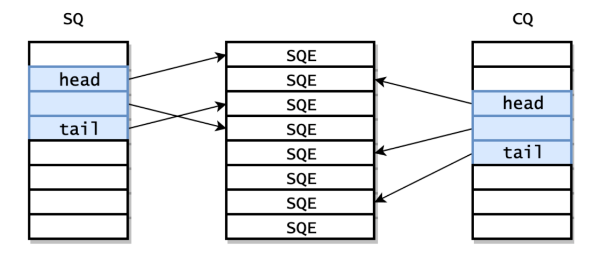

概述
- 本篇总结 Linux io_uring 技术
一 是什么
- io_uring 是 2019 年 Linux 5.1 内核首次引入的高性能异步 I/O 框架。
-
io_uring 最大的贡献在于：统一了 Linux 异步 I/O 框架
-
Linux AIO 只支持 direct I/O 模式的 存储文件（storage file），而且主要用在 数据库这一细分领域；
-
io_uring 支持存储文件和网络文件（network sockets），也支持更多的异步系统调用 （accept/openat/stat/...），而非仅限于 read/write 系统调用。
-
在 设计上是真正的异步 I/O，作为对比，Linux AIO 虽然也 是异步的，但仍然可能会阻塞，某些情况下的行为也无法预测；
-
灵活性和可扩展性非常好，甚至能基于 io_uring 重写所有系统调用，而 Linux AIO 设计时就没考虑扩展性。
和 eBPF 的不同之处
-
eBPF 也算是异步框架（事件驱动），但与 io_uring 没有本质联系，二者属于不同子系统， 并且在模型上有一个本质区别：
-
- eBPF 对用户是透明的，只需升级内核（到合适的版本）， 应用程序无需任何改造；
-
- io_uring 提供了 新的系统调用和用户空间 API，因此 需要应用程序做改造。
二 为什么
优势
-
针对没有使用 Linux AIO 的应用，能显着加速 I/O 密集型应用的性能。但如果你的应用已经在使用传统 Linux AIO 了，并且使用方式恰当， 那 io_uring 并不会带来太大的性能提升。 根据测试，即便打开高级特性，也只有 5%。除非你真的需要这 5% 的额外性能，否则 切换成 io_uring 代价可能也挺大，因为要重写应用来适配 io_uring（或者让依赖的平台或框架去适配，总之需要改代码）
-
随着设备越来越快，中断驱动（interrupt-driven）模式效率已经低于轮询模式（polling for completions） —— 这也是高性能领域最常见的主题之一。
存量 Linux AIO 框架的问题点
-
只支持 O_DIRECT 文件，因此 对常规的非数据库应用（normal, non-database applications） 几乎是无用的；
-
接口在 设计时并未考虑扩展性。虽然可以扩展 —— 我们也确实这么做了 —— 但每加一个东西都相当复杂；
-
虽然从 技术上说接口是非阻塞的，但实际上有很多可能的原因都会导致它阻塞，而且引发的方式难以预料。
三 怎么办
原理及核心数据结构：SQ/CQ/SQE/CQE
-
每个 io_uring 实例都有 两个环形队列（ring），在内核和应用程序之间共享：
-
- 提交队列：submission queue (SQ)
-
- 完成队列：completion queue (CQ)
1. 减少系统调用
由于调用系统调用时，会从用户态切换到内核态，从而进行上下文切换，而上下文切换会消耗一定的 CPU 时间。
使用 read() 和 write() 等系统调用进行 I/O 操作时，会从用户态嵌入到内核态，如下图所示：
io_uring 为了减少或者摒弃系统调用，采用了用户态与内核态 共享内存 的方式来通信。如下图所示：
用户进程可以向 共享内存 提交要发起的 I/O 操作，而内核线程可以从 共享内存 中读取 I/O 操作，并且进行相关的 I/O 操作。
用户态对共享内存进行读写操作是不需要使用系统调用的，所以不会发生上下文切换的情况。
2. 提交队列与完成队列
前面介绍过，io_uring 通过用户态与内核态共享内存的方式，来免去了使用系统调用发起 I/O 操作的过程。
io_uring 主要创建了 3 块共享内存：
- 提交队列（Submission Queue, SQ） ：一整块连续的内存空间存储的环形队列，用于存放将执行 I/O 操作的数据（指向提交队列项数组的索引）。
- 完成队列（Completion Queue, CQ） ：一整块连续的内存空间存储的环形队列，用于存放 I/O 操作完成后返回的结果。
- 提交队列项数组（Submission Queue Entry，SQE） ：提交队列中的一项。
它们之间的关系如下图所示：

3. SQ 线程
前面介绍了 io_uring 怎么通过共享 提交队列 和 完成队列 来避免不必要的系统调用，但应用程序将 I/O 操作提交到 提交队列 后，内核什么时候从 提交队列 中获取要进行的 I/O 操作，并且发起 I/O 请求呢？
当用户使用 SQPOLL 模式（指定了 IORING_SETUP_SQPOLL 标志）创建 io_uring 时，内核将会创建一个名为 io_uring-sq 的内核线程（称为 SQ 线程），此内核线程会不断从 提交队列 中读取 I/O 操作，并且发起 I/O 请求。
当 I/O 请求完成以后，SQ 线程将会把 I/O 操作的结果写入到 完成队列 中，应用程序就可以从 完成队列 中读取 I/O 操作的结果。
如下图所示：
我们简单总结下 io_uring 的操作步骤：
- 第一步 ：应用程序通过向 io_uring 的 提交队列 提交 I/O 操作。
- 第二步 ：SQ 内核线程从 提交队列 中读取 I/O 操作。
- 第三步 ：SQ 内核线程发起 I/O 请求。
- 第四步 ：I/O 请求完成后，SQ 内核线程会将 I/O 请求的结果写入到 io_uring 的 完成队列 中。
- 第五步 ：应用程序可以通过从 完成队列 中读取到 I/O 操作的结果。
4. 总结
- io_uring 主要通过用户态与内核态共享内存的途径，来摒弃使用系统调用来提交 I/O 操作和获取 I/O 操作的结果，从而避免了上下文切换的情况。
- 另外，由于用户态进程与内核态线程通过共享内存的方式通信，从而避免了内存拷贝的过程，提升了 I/O 操作的性能。
所以，io_uring 主要通过两个优化点来提升 I/O 操作的性能：
- 摒弃使用系统调用来提交 I/O 操作和获取 I/O 操作结果。
- 减少用户态与内核态之间的内存拷贝。